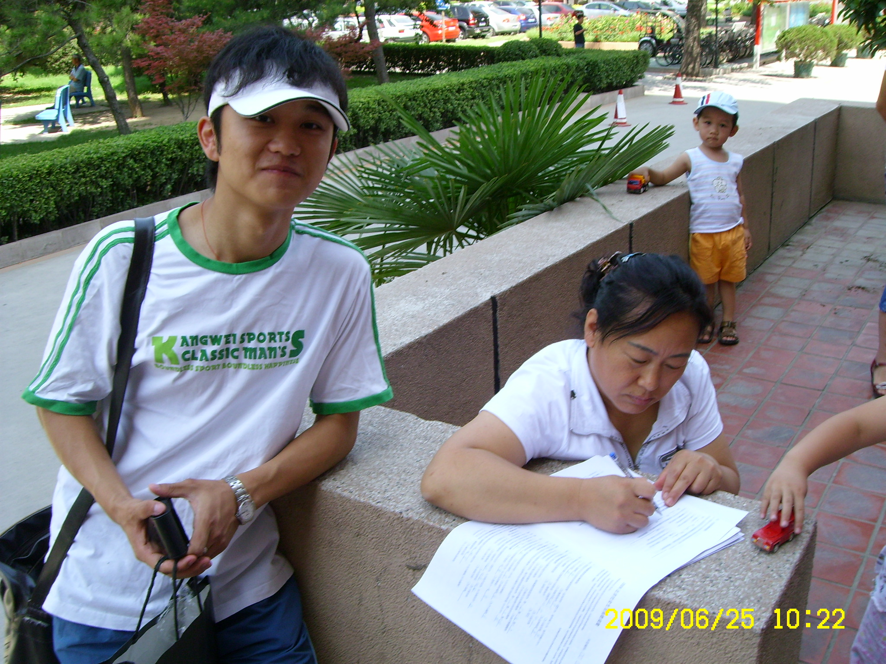
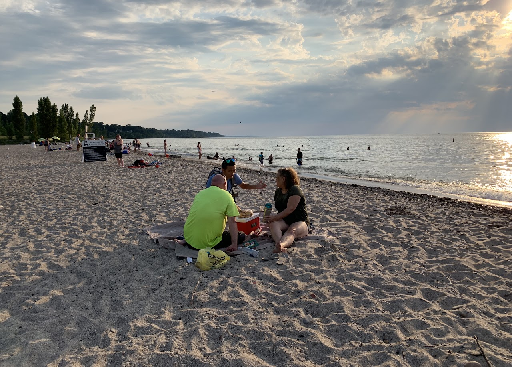

Stuff
Fieldwork
My fate of doing survey research started more than a decade ago, when I was a young college student who knew nothing about stated preference but was working as an enumerator handing out paper surveys.


On the trail
I estimate hypothetical values in my research, but I discover my own recreational value by leaving real footprints on the trail.